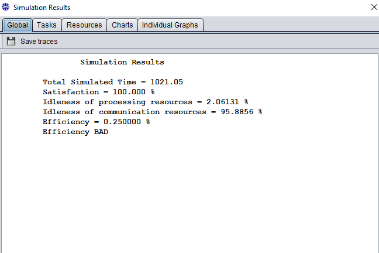
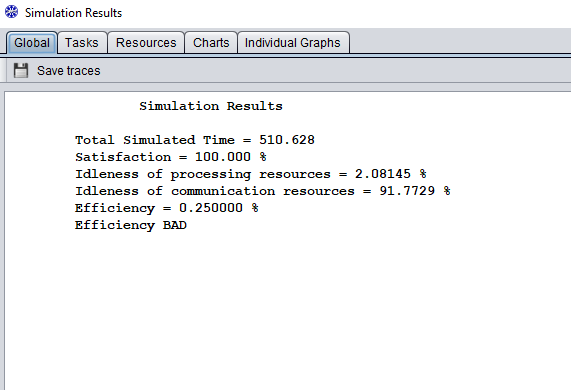
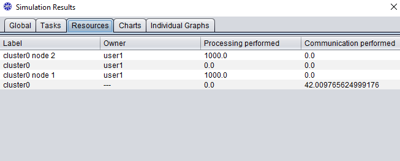
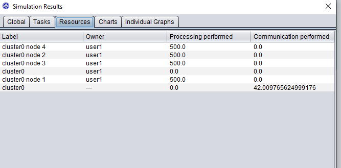

Cluster Computing: simulação no iSPD com 2 e 4 workers
| Integrante | RM |
|---|---|
| Bruno Fernandes Nascimento | 552574 |
| Edgar Lódula de Assis | 565260 |
| Júlia Aben-Athar | 566325 |
O EloBairro é um assistente de serviços públicos voltado a pessoas com dificuldade de uso de interfaces textuais. O cidadão envia voz, texto ou fotografia, e o sistema responde com base em fontes oficiais ou registra um protocolo. A inteligência artificial atua no assistente de voz, no motor de recuperação e geração de texto (RAG) e na classificação de fissuras e danos em fotografias, realizada pelo módulo de Visão Computacional.
A tarefa simulada é a classificação de fotografias em lote. Após eventos como chuvas intensas, é esperado aumento do volume de imagens enviadas em curto intervalo, e cada imagem pode ser processada de forma independente, o que permite distribuir a carga entre vários workers. O objetivo é comparar o tempo total de processamento de um cluster com 2 workers e de outro com 4. A atividade é uma simulação no iSPD, e os valores de carga são hipóteses do modelo, não medições da aplicação.
O modelo contém um cluster com um master e N workers. Entre os cenários, somente o número de workers foi alterado. O tamanho computacional de 2000 MFLOPS corresponde à hipótese de inferência de um classificador de imagens; a comunicação de 4 Mbits (cerca de 500 KB), à hipótese de uma fotografia comprimida; e as 1000 tarefas, à hipótese de um dia de pico. O retorno do rótulo foi desconsiderado. As unidades foram conferidas na interface do iSPD. Com 2000 MFLOPS e capacidade de 1000 MFLOPS/s, cada tarefa exige 2 s de processamento.
| Parâmetro | Cenário A | Cenário B | Unidade |
|---|---|---|---|
| Número de tarefas (imagens) | 1000 | 1000 | tarefas |
| Tamanho computacional por tarefa | 2000 | 2000 | MFLOPS |
| Comunicação por tarefa | 4 | 4 | Mbits |
| Chegada das tarefas | 0 | 0 | s (lote único) |
| Workers | 2 | 4 | máquinas |
| Núcleos por worker | 1 | 1 | núcleos |
| Capacidade por worker | 1000 | 1000 | MFLOPS/s |
| Banda do link | 100 | 100 | Mbits/s |
| Latência do link | 0,001 | 0,001 | s |
| Escalonador | Workqueue | Workqueue | - |
Os valores abaixo foram extraídos da tela de resultados do iSPD (Figuras 1 a 4). A redução percentual, a razão T2/T4, o speedup (T2/T4) e a eficiência (speedup dividido por 2) foram calculados pelo script calcular_resultados.py.
| Métrica | Cenário A | Cenário B | Unidade |
|---|---|---|---|
| Total Simulated Time | 1021,05 | 510,63 | s |
| Tarefas concluídas | 100 | 100 | % |
| Processamento por worker (aba Resources) | 1000,0 | 500,0 | valor do iSPD |
| Comunicação do master (aba Resources) | 42,01 | 42,01 | s |
| Ociosidade do processamento | 2,06 | 2,08 | % |
| Ociosidade da comunicação | 95,89 | 91,77 | % |
| Redução percentual do tempo | - | 49,99 | % |
| Razão T2/T4 (ideal = 2) | - | 2,000 | - |
| Eficiência | - | 99,98 | % |
 |  |
 |  |
O tempo total passou de 1021,05 s para 510,63 s, o que representa redução de 49,99 % e speedup de 2,000 frente ao ideal de 2 (1,9996 antes do arredondamento). A aba Resources indica distribuição uniforme da carga: 1000,0 por worker no cenário A e 500,0 por worker no cenário B, sem desbalanceamento.
O resultado próximo ao ideal decorre da relação entre processamento e comunicação. Cada tarefa requer 2 s de processamento e 0,042 s de comunicação, sendo 0,04 s de transmissão e 0,002 s de latência. O tempo de comunicação do master foi de 42,01 s nos dois cenários, equivalente a cerca de 4 % do tempo total no cenário A e 8 % no cenário B, valores coerentes com a ociosidade da comunicação de 95,89 % e 91,77 %.
A diferença em relação ao tempo de processamento puro (1000 s e 500 s) é explicada pelo escalonador Workqueue, que envia a tarefa seguinte somente após o retorno da anterior. Cada worker permanece ocioso por cerca de 0,042 s por tarefa, o que resulta em 500 × 0,042 = 21 s no cenário A e 250 × 0,042 = 10,5 s no cenário B, próximos dos acréscimos observados de 21,05 s e 10,63 s e da ociosidade de processamento de aproximadamente 2 %.
O gargalo potencial é o master, por onde passam todas as fotografias. O tempo total de comunicação é constante (42 s), enquanto o tempo de processamento é proporcional a 1/N. A fila média de comunicação aumentou de 4,2 × 10-5 s para 2,5 × 10-4 s ao passar de 2 para 4 workers. Considerando apenas esses parâmetros, a comunicação passaria a limitar o desempenho quando 2000 s/N fosse inferior a 42 s, isto é, para N próximo de 48. Trata-se de estimativa derivada de parâmetros hipotéticos.
Limitações da simulação:
No cenário simulado, dobrar o número de workers reduziu o tempo total em 49,99 %, com eficiência de 99,98 %, porque o processamento predomina sobre a comunicação. A extrapolação para o sistema real depende da substituição das hipóteses de carga por medições.
Os arquivos estão na pasta 07-cluster do repositório. Para reproduzir, executa-se java -jar iSPD.jar, abre-se cada modelo e inicia-se a simulação.
cenarios_ispd/cenario_a_2workers.imsx e cenario_b_4workers.imsx: modelos do iSPD, que diferem apenas no número de nodes (2 e 4);cenarios_ispd/parametros.md e resultados.md: parâmetros com unidades e resultados registrados;cenarios_ispd/calcular_resultados.py: python calcular_resultados.py 1021.05 510.628;evidencias/: capturas de modelo, carga, resultado global e aba Resources dos dois cenários.